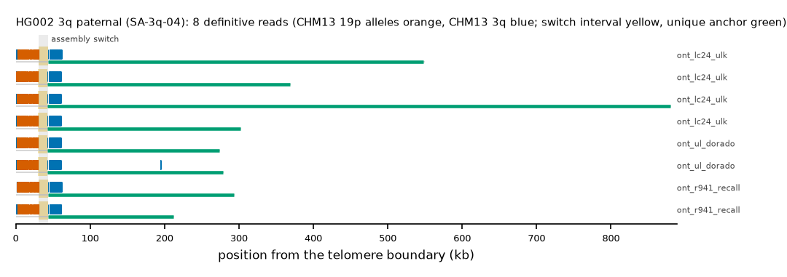

HG002 3q paternal: SA-3q-04
Claim HG002#1#chr3_PATERNAL#R. All claims
- cohort
- HG002 Q100
- individual
- HG002
- haplotype
- paternal
- arm
- 3q
- allele
- SA-3q-04 (within family)
- model
- donor CHM13 19p, proximal CHM13 3q, recipient CHM13 3q, pattern DP
- claimed end(s)
HG002#1#chr3_PATERNAL#R- assembly switch
- 35,425 bp from the telomere boundary; own-window projection 30836-43764 bp
- v1 verdict
- confirmed (confirmed)
- definitive tier
- definitive (>= 2 datasets)
- reads
- 8 conclusive switch-concordant, 0 discordant, 0 contradicting, 75 consistent; 8 definitive (ont_lc24_ulk,ont_r941_recall,ont_ul_dorado)
- by tier
- definitive:8;consistent:75
- source
- HG002 Q100 v1.1 public read alignments (16 files; 12 independent datasets after molecule de-duplication)

Conclusive and contradicting reads (12)
101 further reads are consistent (switch test passed, but no terminal telomere, anchor or integrity); they are
listed in reads.tsv.gz. Switch: 95% interval in subtelomere coordinates (kb from the
telomere boundary) and projected on CHM13 3q. Each samtools command prints the read's record
from its public file (CRAM: add the CHM13 v2.0 FASTA as -T).
| read | dataset | tier | length | switch (subtelomere, kb) | switch on CHM13 | donor units / purity | proximal units / purity | anchor (CHM13, MAPQ, unique) | own-assembly best end | fetch |
|---|---|---|---|---|---|---|---|---|---|---|
93d4bbd8-a626-4ea6-aebd-e6b858024225 | ont_lc24_ulk | definitive | 881,685 | 29.9-42.9 | chr3:201056518-201069455 | 182 / 0.85 | 82 / 1.00 | chr3:200224991-201056518, 60, 677.6 kb | HG002#1#chr3_PATERNAL#R (99.7%) ✓ | samtoolssamtools view -F 0x900 -X 'https://human-pangenomics.s3.amazonaws.com/T2T/HG002/assemblies/polishing/HG002/v1.1/mapping/ont_lc24_ulk/hg002v1.1_ont_lc24_ulk.pri.bam' 'https://human-pangenomics.s3.amazonaws.com/T2T/HG002/assemblies/polishing/HG002/v1.1/mapping/ont_lc24_ulk/hg002v1.1_ont_lc24_ulk.pri.bam.bai' 'chr3_PATERNAL:201445445-201513538' | awk -v r='93d4bbd8-a626-4ea6-aebd-e6b858024225' '$1==r' |
c03e84bb-1cad-4faa-97b5-27c0549d7de7 | ont_lc24_ulk | definitive | 550,158 | 30.8-43.7 | chr3:201056518-201069434 | 186 / 0.83 | 83 / 1.00 | chr3:200555809-201056518, 60, 346.8 kb | HG002#1#chr3_PATERNAL#R (99.8%) ✓ | samtoolssamtools view -F 0x900 -X 'https://human-pangenomics.s3.amazonaws.com/T2T/HG002/assemblies/polishing/HG002/v1.1/mapping/ont_lc24_ulk/hg002v1.1_ont_lc24_ulk.pri.bam' 'https://human-pangenomics.s3.amazonaws.com/T2T/HG002/assemblies/polishing/HG002/v1.1/mapping/ont_lc24_ulk/hg002v1.1_ont_lc24_ulk.pri.bam.bai' 'chr3_PATERNAL:201445445-201513538' | awk -v r='c03e84bb-1cad-4faa-97b5-27c0549d7de7' '$1==r' |
ca566567-3108-4114-9611-d3f21fad76f6 | ont_lc24_ulk | definitive | 372,076 | 30.0-42.9 | chr3:201056518-201069452 | 183 / 0.85 | 82 / 1.00 | chr3:200734702-201056518, 60, 167.9 kb | HG002#1#chr3_PATERNAL#R (99.7%) ✓ | samtoolssamtools view -F 0x900 -X 'https://human-pangenomics.s3.amazonaws.com/T2T/HG002/assemblies/polishing/HG002/v1.1/mapping/ont_lc24_ulk/hg002v1.1_ont_lc24_ulk.pri.bam' 'https://human-pangenomics.s3.amazonaws.com/T2T/HG002/assemblies/polishing/HG002/v1.1/mapping/ont_lc24_ulk/hg002v1.1_ont_lc24_ulk.pri.bam.bai' 'chr3_PATERNAL:201445445-201513538' | awk -v r='ca566567-3108-4114-9611-d3f21fad76f6' '$1==r' |
dd249307-64ec-40c0-9486-707ae5fedd52 | ont_lc24_ulk | definitive | 305,875 | 30.0-42.9 | chr3:201056518-201069442 | 182 / 0.85 | 82 / 1.00 | chr3:200801192-201056518, 60, 101.4 kb | HG002#1#chr3_PATERNAL#R (99.8%) ✓ | samtoolssamtools view -F 0x900 -X 'https://human-pangenomics.s3.amazonaws.com/T2T/HG002/assemblies/polishing/HG002/v1.1/mapping/ont_lc24_ulk/hg002v1.1_ont_lc24_ulk.pri.bam' 'https://human-pangenomics.s3.amazonaws.com/T2T/HG002/assemblies/polishing/HG002/v1.1/mapping/ont_lc24_ulk/hg002v1.1_ont_lc24_ulk.pri.bam.bai' 'chr3_PATERNAL:201445445-201513538' | awk -v r='dd249307-64ec-40c0-9486-707ae5fedd52' '$1==r' |
1194c4ee-8637-462d-888f-f7bd4be78d95 | ont_r941_recall | definitive | 297,153 | 30.9-43.8 | chr3:201056518-201069418 | 178 / 0.83 | 81 / 1.00 | chr3:200810795-201056518, 60, 91.8 kb | HG002#1#chr3_PATERNAL#R (97.5%) ✓ | samtoolssamtools view -F 0x900 -X 'https://human-pangenomics.s3.amazonaws.com/T2T/HG002/assemblies/polishing/HG002/v1.1/mapping/ont_methylation_recall_oct2024/03_08_22_R941_HG002.pri.bam' 'https://human-pangenomics.s3.amazonaws.com/T2T/HG002/assemblies/polishing/HG002/v1.1/mapping/ont_methylation_recall_oct2024/03_08_22_R941_HG002.pri.bam.bai' 'chr3_PATERNAL:201445445-201513538' | awk -v r='1194c4ee-8637-462d-888f-f7bd4be78d95' '$1==r' |
f5443c6f-9ee9-4adf-a503-d6693b118c35 | ont_r941_recall | definitive | 215,812 | 30.8-43.7 | chr3:201056518-201069390 | 179 / 0.82 | 79 / 1.00 | chr3:200888017-201056518, 60, 17.5 kb | HG002#1#chr3_PATERNAL#R (97.5%) ✓ | samtoolssamtools view -F 0x900 -X 'https://human-pangenomics.s3.amazonaws.com/T2T/HG002/assemblies/polishing/HG002/v1.1/mapping/ont_methylation_recall_oct2024/03_08_22_R941_HG002.pri.bam' 'https://human-pangenomics.s3.amazonaws.com/T2T/HG002/assemblies/polishing/HG002/v1.1/mapping/ont_methylation_recall_oct2024/03_08_22_R941_HG002.pri.bam.bai' 'chr3_PATERNAL:201445445-201513538' | awk -v r='f5443c6f-9ee9-4adf-a503-d6693b118c35' '$1==r' |
39a78a03-cf66-4f26-bce8-6d982ed137f4 | ont_ul_dorado | definitive | 279,672 | 30.0-42.9 | chr3:201056518-201069413 | 175 / 0.85 | 86 / 1.00 | chr3:200824491-201056518, 60, 79.2 kb | HG002#1#chr3_PATERNAL#R (97.7%) ✓ | samtoolssamtools view -F 0x900 -X 'https://human-pangenomics.s3.amazonaws.com/T2T/HG002/assemblies/polishing/HG002/v1.1/mapping/ont_r10_ul_dorado/hg002v1.1_ont_r10_ul_dorado.pri.bam' 'https://human-pangenomics.s3.amazonaws.com/T2T/HG002/assemblies/polishing/HG002/v1.1/mapping/ont_r10_ul_dorado/hg002v1.1_ont_r10_ul_dorado.pri.bam.bai' 'chr3_PATERNAL:201445445-201513538' | awk -v r='39a78a03-cf66-4f26-bce8-6d982ed137f4' '$1==r' |
a90bfc27-2cdf-4ec4-b217-67041a820735 | ont_ul_dorado | definitive | 275,382 | 30.0-42.9 | chr3:201056518-201069449 | 180 / 0.85 | 82 / 1.00 | chr3:200829710-201056518, 60, 73.9 kb | HG002#1#chr3_PATERNAL#R (99.5%) ✓ | samtoolssamtools view -F 0x900 -X 'https://human-pangenomics.s3.amazonaws.com/T2T/HG002/assemblies/polishing/HG002/v1.1/mapping/ont_r10_ul_dorado/hg002v1.1_ont_r10_ul_dorado.pri.bam' 'https://human-pangenomics.s3.amazonaws.com/T2T/HG002/assemblies/polishing/HG002/v1.1/mapping/ont_r10_ul_dorado/hg002v1.1_ont_r10_ul_dorado.pri.bam.bai' 'chr3_PATERNAL:201445445-201513538' | awk -v r='a90bfc27-2cdf-4ec4-b217-67041a820735' '$1==r' |
93d4bbd8-a626-4ea6-aebd-e6b858024225 | ont_q28_lc24 | definitive (not counted: duplicate molecule) | 881,685 | 29.9-42.9 | chr3:201056518-201069455 | 182 / 0.85 | 82 / 1.00 | chr3:200224991-201056518, 60, 677.6 kb | HG002#1#chr3_PATERNAL#R (99.7%) ✓ | samtoolssamtools view -F 0x900 -X 'https://human-pangenomics.s3.amazonaws.com/T2T/HG002/assemblies/polishing/HG002/v1.1/mapping/ont_q28_lc24/hg002v1.1_ont_q28_lc24.bam' 'https://human-pangenomics.s3.amazonaws.com/T2T/HG002/assemblies/polishing/HG002/v1.1/mapping/ont_q28_lc24/hg002v1.1_ont_q28_lc24.bam.bai' 'chr3_PATERNAL:201445445-201513538' | awk -v r='93d4bbd8-a626-4ea6-aebd-e6b858024225' '$1==r' |
c03e84bb-1cad-4faa-97b5-27c0549d7de7 | ont_q28_lc24 | definitive (not counted: duplicate molecule) | 550,158 | 30.8-43.7 | chr3:201056518-201069434 | 186 / 0.83 | 83 / 1.00 | chr3:200555809-201056518, 60, 346.8 kb | HG002#1#chr3_PATERNAL#R (99.8%) ✓ | samtoolssamtools view -F 0x900 -X 'https://human-pangenomics.s3.amazonaws.com/T2T/HG002/assemblies/polishing/HG002/v1.1/mapping/ont_q28_lc24/hg002v1.1_ont_q28_lc24.bam' 'https://human-pangenomics.s3.amazonaws.com/T2T/HG002/assemblies/polishing/HG002/v1.1/mapping/ont_q28_lc24/hg002v1.1_ont_q28_lc24.bam.bai' 'chr3_PATERNAL:201445445-201513538' | awk -v r='c03e84bb-1cad-4faa-97b5-27c0549d7de7' '$1==r' |
ca566567-3108-4114-9611-d3f21fad76f6 | ont_q28_lc24 | definitive (not counted: duplicate molecule) | 372,076 | 30.0-42.9 | chr3:201056518-201069452 | 183 / 0.85 | 82 / 1.00 | chr3:200734702-201056518, 60, 167.9 kb | HG002#1#chr3_PATERNAL#R (99.7%) ✓ | samtoolssamtools view -F 0x900 -X 'https://human-pangenomics.s3.amazonaws.com/T2T/HG002/assemblies/polishing/HG002/v1.1/mapping/ont_q28_lc24/hg002v1.1_ont_q28_lc24.bam' 'https://human-pangenomics.s3.amazonaws.com/T2T/HG002/assemblies/polishing/HG002/v1.1/mapping/ont_q28_lc24/hg002v1.1_ont_q28_lc24.bam.bai' 'chr3_PATERNAL:201445445-201513538' | awk -v r='ca566567-3108-4114-9611-d3f21fad76f6' '$1==r' |
dd249307-64ec-40c0-9486-707ae5fedd52 | ont_q28_lc24 | definitive (not counted: duplicate molecule) | 305,875 | 30.0-42.9 | chr3:201056518-201069442 | 182 / 0.85 | 82 / 1.00 | chr3:200801192-201056518, 60, 101.4 kb | HG002#1#chr3_PATERNAL#R (99.8%) ✓ | samtoolssamtools view -F 0x900 -X 'https://human-pangenomics.s3.amazonaws.com/T2T/HG002/assemblies/polishing/HG002/v1.1/mapping/ont_q28_lc24/hg002v1.1_ont_q28_lc24.bam' 'https://human-pangenomics.s3.amazonaws.com/T2T/HG002/assemblies/polishing/HG002/v1.1/mapping/ont_q28_lc24/hg002v1.1_ont_q28_lc24.bam.bai' 'chr3_PATERNAL:201445445-201513538' | awk -v r='dd249307-64ec-40c0-9486-707ae5fedd52' '$1==r' |
Files
CRAM/BAM on CHM13 v2.0, BAM on the person's own assembly windows and the window FASTA: release asset subtel_read_evidence_v1_HG002_Q100.tar.gz, directory read_evidence_v1/HG002_Q100/HG002_1_chr3_PATERNAL_R/ (downloads).
Re-derive this verdict
git clone https://github.com/jlanej/human-subtelomere-atlas && cd human-subtelomere-atlas
evidence/replicate_claim.sh 'HG002#1#chr3_PATERNAL#R'The script fetches the cited reads from the public source by region and read ID, re-runs the frozen criteria and compares every per-read and claim verdict with this page (details).